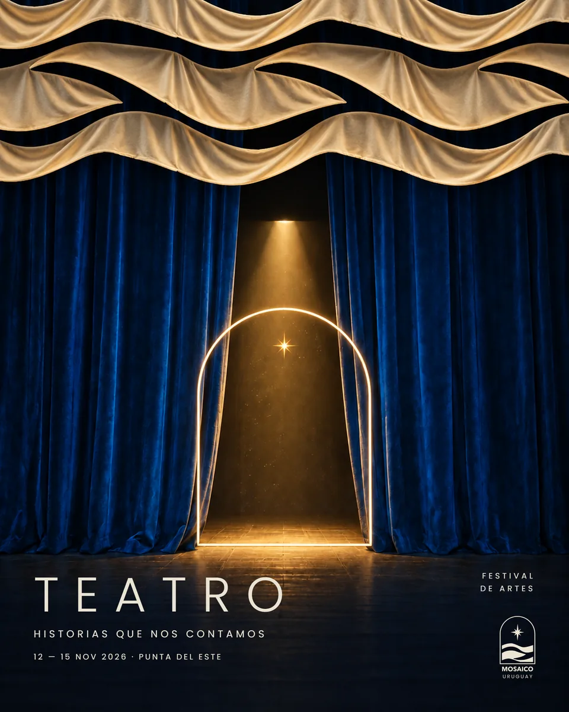
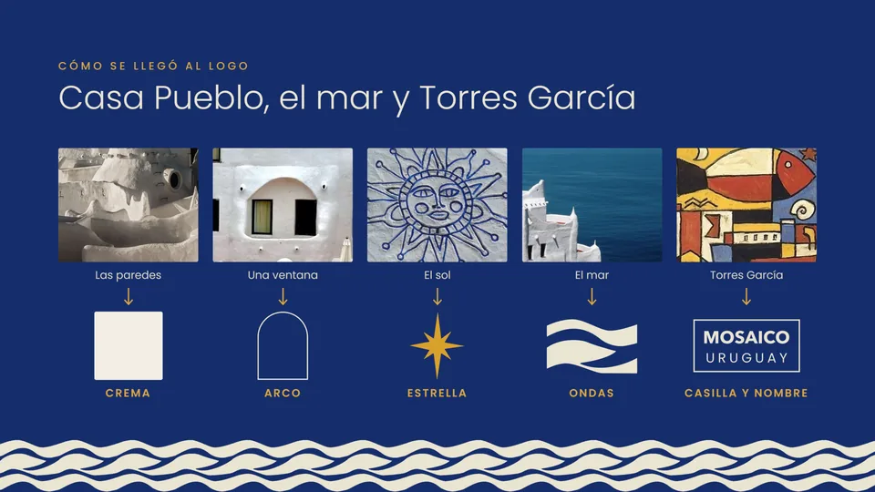
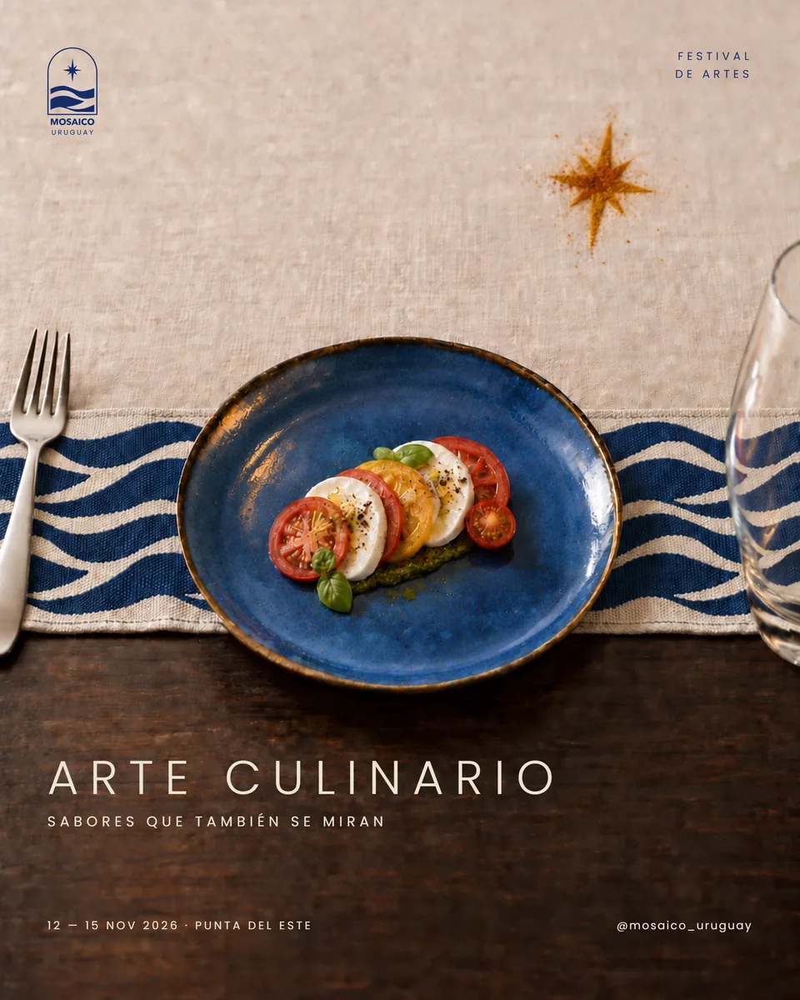
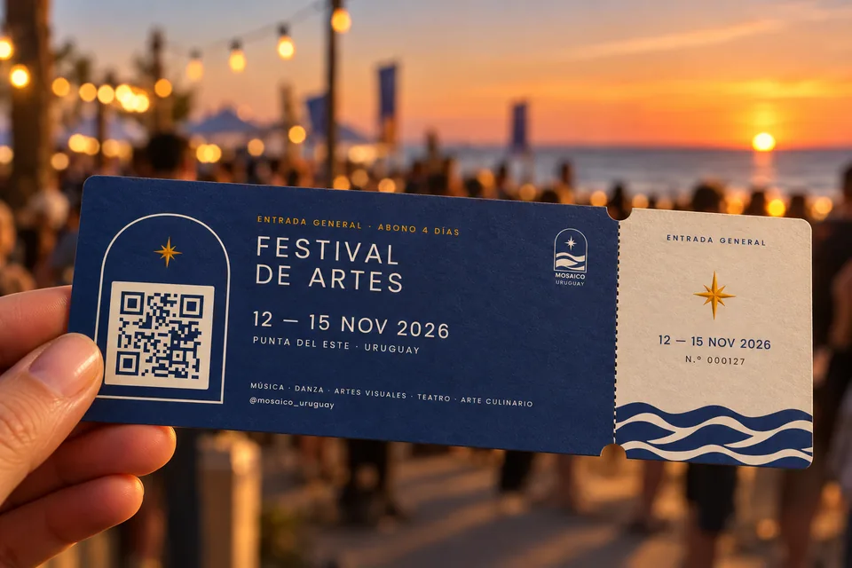
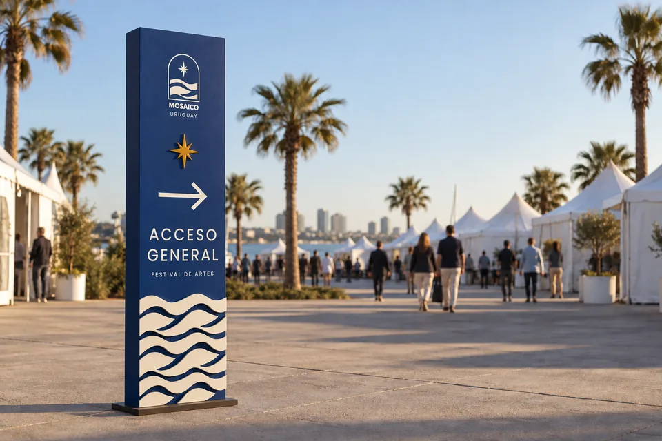
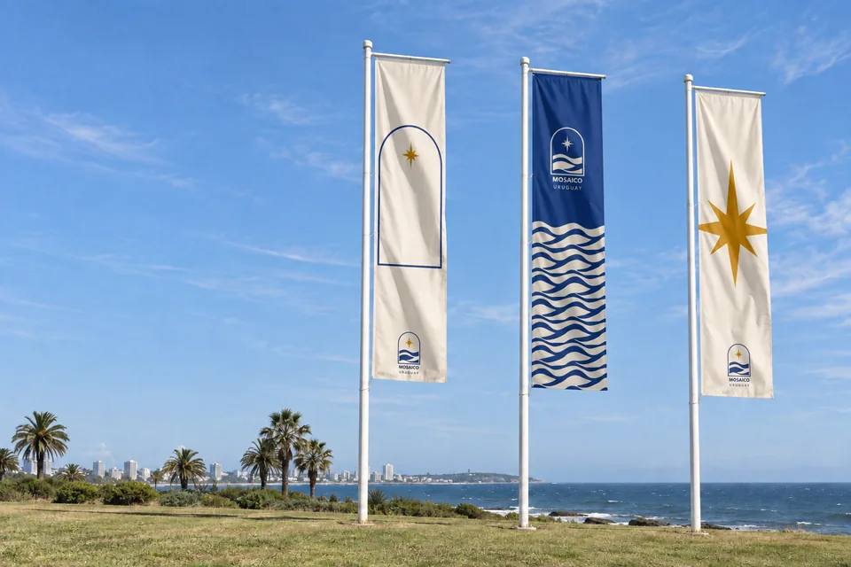
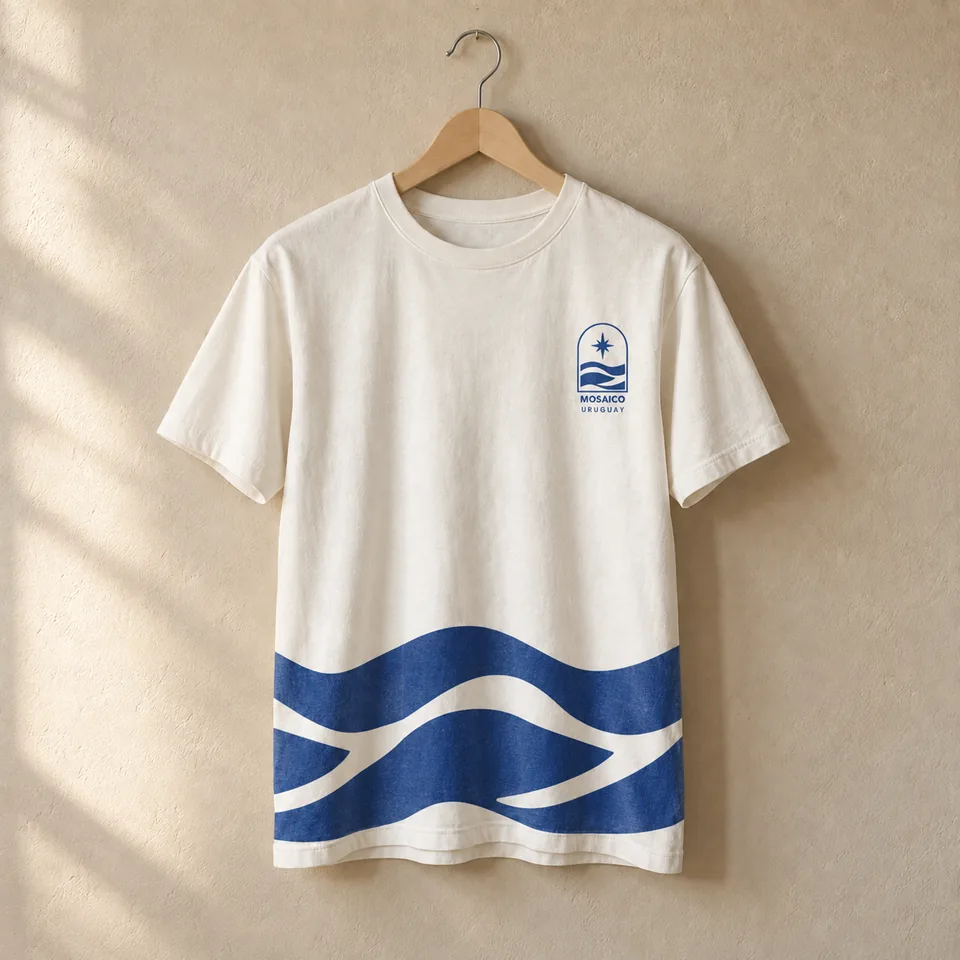
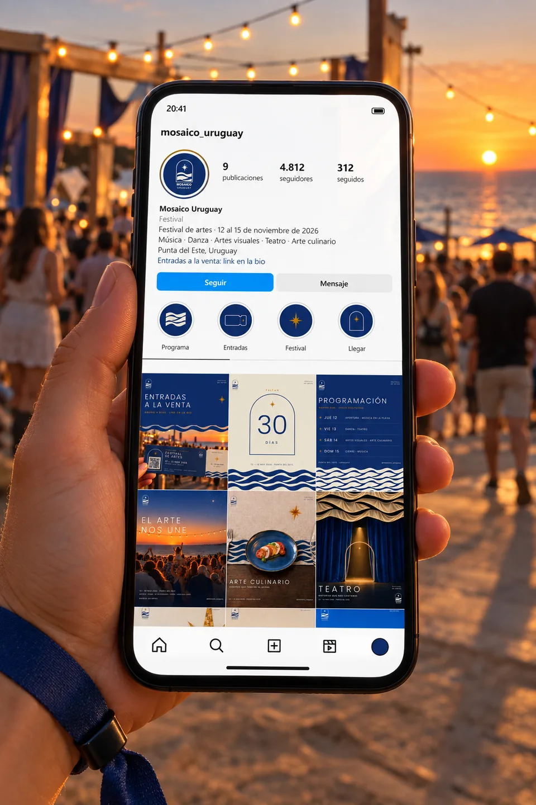
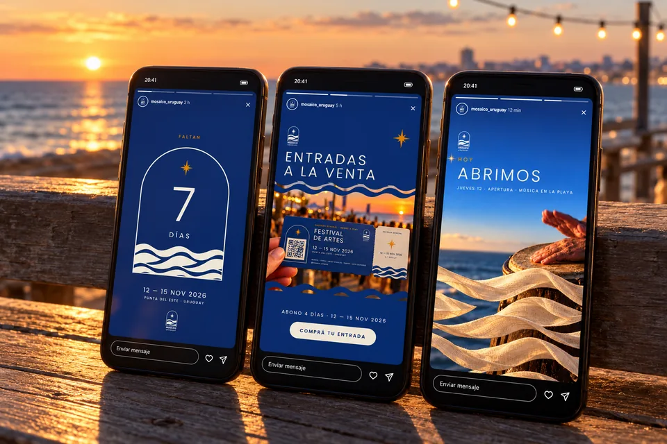
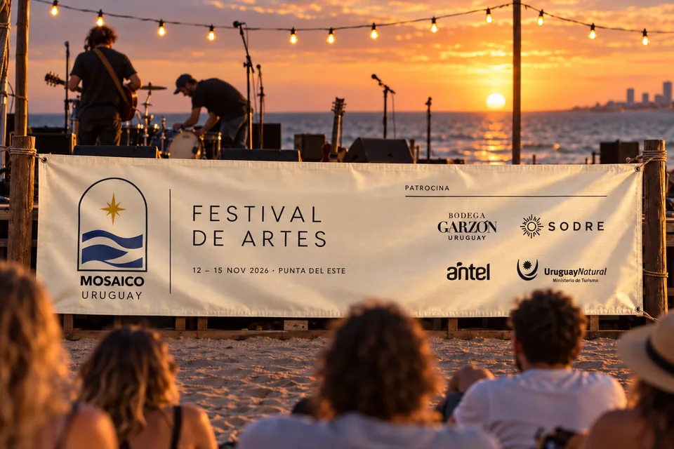

01 / 07
Mosaico Uruguay
Identity and a system of pieces for an arts festival in Punta del Este.
- Year
- 2026
- Context
- Fictional arts festival
- Role
- Identity, system and pieces

Five disciplines (music, dance, visual arts, theatre and culinary art) had to read as a single festival. And the festival had to break away from Punta del Este's image as a party destination. The answer is a mosaic: each discipline is a different piece, and the festival is the figure they make together.
- Festival
- November 12 to 15, 2026
- Venue
- Punta del Este, by the sea
- Pieces
- Thirteen, one family




The logo
The logo comes from three places: Casa Pueblo, the sea and Torres García. The cream comes from the whitewashed walls; the arch, from a window; the star, from the sun; the waves, from the sea. The box and the name come from Torres García's grid.
- Blue · sea#152D6A
- Cream · lime#EAE4D3
- Ochre · sun#BC7900
Few constants, always the same. Everything else varies.
Constants
- The three elements, drawn exactly
- A three-colour palette
- Two typefaces: Avenir Next and Poppins
- The logo always in a corner
- Date, venue and socials, together
Variables
- Which element leads each piece
- Scale, cropping and quantity
- Line, fill, window, pattern
- How it relates to the photo
- The typographic layout
From flat to organic
First, the piece is composed with the logo's paths and the exact copy. Then the elements become part of the scene: the arch is a frame on the wall, the waves turn into fabric, stage borders or a table runner.







